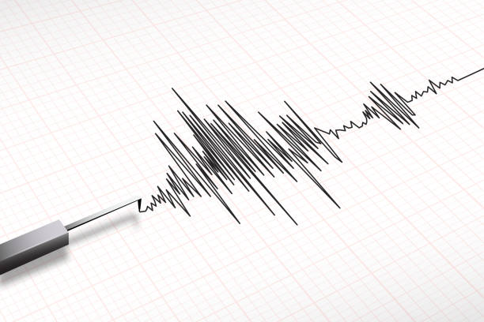

Quake Tracker
The global live earthquake tracker
This web application will take advanage of the USGS EQ Catalog API and Mapbox to map out recent, past, and even current earthquakes using their recorded coordinates. Users will be able to pan around a world map and find earthquake icons which will reveal much more data about that specific earthquake when clicked on. Data reported on each earthquake includes: time, coordinates, depth, magnitude, type, alert level, and name. Alongside the map, the current query of earthquakes will be listed in a table which can be filtered through, and provides a link to the correct spot on the map.